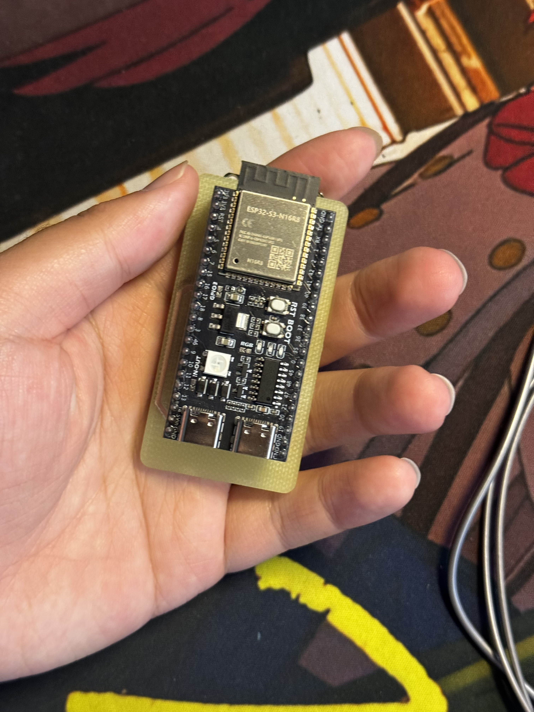
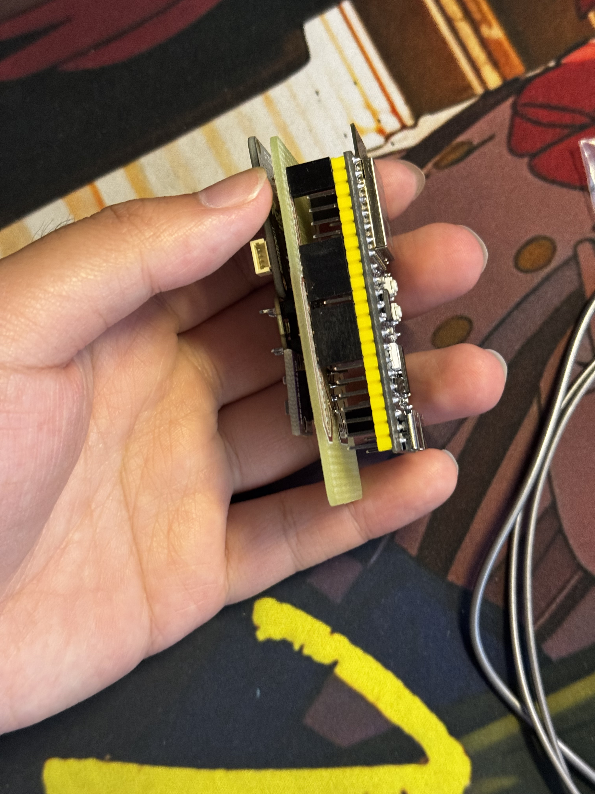

Hackathon Day 2：算法、签名与硬件调试
1. 核心算法与 Web 看板完善
早上的精力主要集中在处理传感器收集上来的裸数据，补全了以下核心推断算法：
- 光源类型推断：利用光谱通道数据，区分当前环境光是“自然光”还是“人造灯光”。
- 健康暴露时长计算：基于高频采样，计算“频闪暴露时长”和“噪声暴露时长”，以便设备给出实质性的健康建议。
前端数据展示也基本成型，各项环境指标可以在网页上直观查看：


2. 移动端探索与权限碰壁
因为设备没有屏幕，计划用 NFC “碰一碰”触发配网或直接查看数据，结果一上午都在和各平台的权限限制拉扯：
- App Clip 尝试：在 Xcode 中建好工程后，发现 Developer Free 免费账号无法给 App Clip 签名，没法在手机上运行调试，只能放弃。
- 鸿蒙元服务尝试：转战 HarmonyOS，迅速搓了一个查看数据的元服务卡片页面。结果申请 AppID 被人工审核卡进度，随后查阅文档更发现，NFC 触发依赖的 AirTouch 能力仅对合作伙伴开放。NFC 方案无奈流产。

3. 原型联调与硬件“翻车”现场
在将元器件真正焊上 PCB 之前，我们首先在面包板上搭建了完整的硬件原型进行联调。这也是我们后端数据库和前端看板中那些环境测试数据的真实来源。通过下面这个面包板原型，我们成功跑通了“传感器采集 - ESP32上传 - 云端处理 - 前端展示”的完整链路：

到了下午，负责硬件的同学完成了 PCB 的贴片焊接工作，满怀期待地准备将硬件实体化。以下为组装好的双面板 PCB 实物图：


然而上电后，发现 I2C 总线根本扫描不到任何设备。经过万用表排查，惊恐地发现这块双面板竟然只有一面有电压，另一面处于断路状态。
团队尝试通过飞线强行给另一面的器件供电进行抢救，但在密集的贴片元件面前操作难度极大，最终没能成功。所以我们最终验收展示的，依然是成功验证了软硬件全链路的那个面包板版本。
总结
虽然没能以完美的 PCB 形态完成最终演示留下了些许遗憾，但面包板原型已经证明了设备端核心逻辑、云端处理以及前后端链路的完全可行。硬件工程的玄学故障与软件端烦人的鉴权机制，也是从纯代码走向物理实物必经的历练过程。
最后项目的代码部分，开源地址
最后归还了借用的芯片：